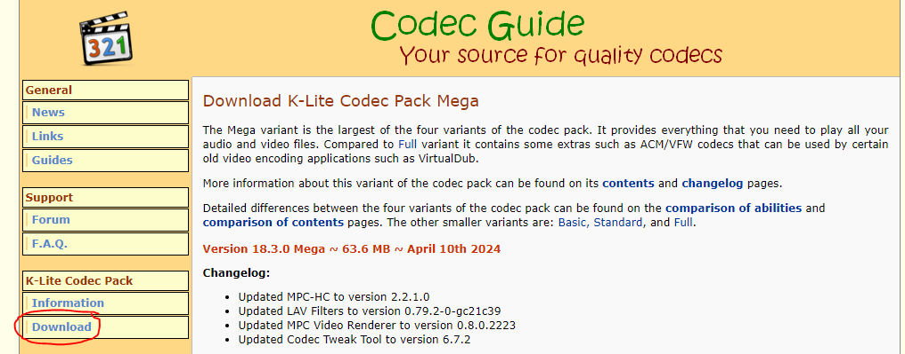
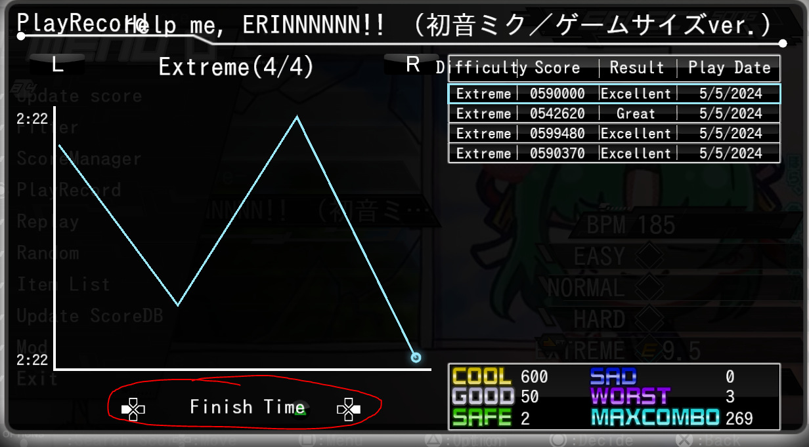
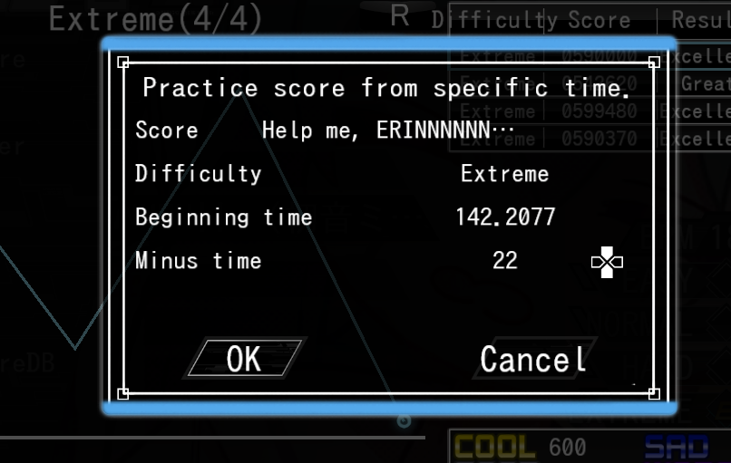
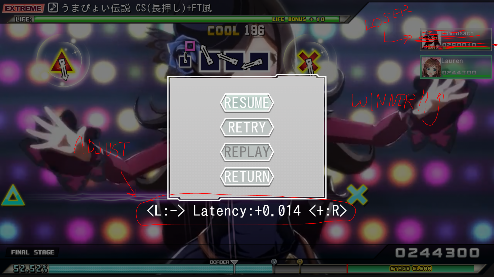

Q: How do I fix the "It failed to initialize DirectX Device" error?
A: Go here. Click the blue 'Download' button and install DirectX. Then, try restarting PPD again.
Q: I have done everything in the guides and my game keeps giving me a fatal error and won't launch!
A: Sometimes, PPD won't load if Steam or any similar application is open. Try opening PPD with all other applications closed (besides the necessary ones for controller use like AntiMicroX, for example).
If this STILL doesn't help, we recommend reinstalling PPD from scratch and going over the guides again.
Q: When I enter single player mode, my game is stuck on a loading screen.
A: If you have a LOT of songs, sometimes PPD can take a hot minute to load. Wait at most 5 minutes.
If the game still hasn't loaded, we recommend reinstalling PPD from scratch and going over the guides again.
Q: When I enter the song selection screen, the songs aren't playing/when I start a song, it tells me "no movie detected."
A: If you are SURE you added the chart to your 'songs' folder and have the proper .mp4 video file inserted into the chart's folder, and the game still cannot play the chart or gives a 'no movie detected' error, you will need to download the corresponding codec pack.
Click here to go to the website with the download:
Download the 'Standard' version. After downloading this, try restarting PPD and playing a song again.
Q: How can I access Practice Mode?
A: In order to practice a section of a chart that you are having trouble with, you must first have a saved score on your leaderboard to access your play records.
So, this means you must have played the chart before without the 'CSInput' mod enabled, or have played a chart that doesn't require it to save a score.
1. On the song select screen, for the chart you want to practice, press square to bring up your menu and go to play record.

2. On the PlayRecords screen, go left to the Finish Time page and hit triangle. This will allow you to rewind the chart and practice a specific section. The higher the number, the earlier in the song you go back.
 Q: The timing on one of the charts I played is totally off sync!
A: During a song, press the pause button (usually the start button on controller). Then, press left or right to adjust the song's latency (this is specific per song, it will not transfer to every song).
You will likely have to trial and error this a bit to get the right latency. When you've set the right latency, you can retry the song. Your set latency will stay at what you set it at if you replay the song later, so you don't have to reset it every time.
Q: I'm using a controller and my sliders and inputs just aren't working even though I set everything up correctly/I'm getting different inputs than what I should be getting.
A: If all else fails, try this:
1. Go to your Control Panel (you can search for it in the search bar as "control panel"). Go to "View devices and printers".
2. Remove the one called Wireless Controller (achieved by right clicking on it and pressing on "Remove Device").
3. Then unplug and replug your controller.
4. Open AntiMicroX/JoyToKey/DS4Windows if you didn't have it open.
5. Right click on Wireless Controller and go to Game controller settings.
6. Click on Advanced.... Check what is your preferred device there and change it to "Controller (XBOX 360 for Windows)".
7. Press OK on the tabs and go back to your devices.
8. Do the same for the Xbox 360 Controller for Windows. (Game controller settings, Click on Advanced.... and make sure to change its preferred device to the "Controller (XBOX 360 for Windows)"
So now both of the controllers should prefer "Controller (XBOX 360 for Windows)".
Rebind your inputs in PPD if needed - if it somehow still doesn't work, try to restart your computer.
Extra steps if it still doesn't work - check if your controller drivers are installed:
1. Go to any of your controllers and right click on them and go to Properties.
2. In the Properties go to Hardware. In Hardware press on Properties again.
3. Click on Change settings.
4. Go to the Driver tab and check Driver Details.
If there is something missing then you might need to update your drivers from there.
This guide was originally written (with images) by SoupMarine (PPD's #1 Woman in STEM). Thank you, Soup!